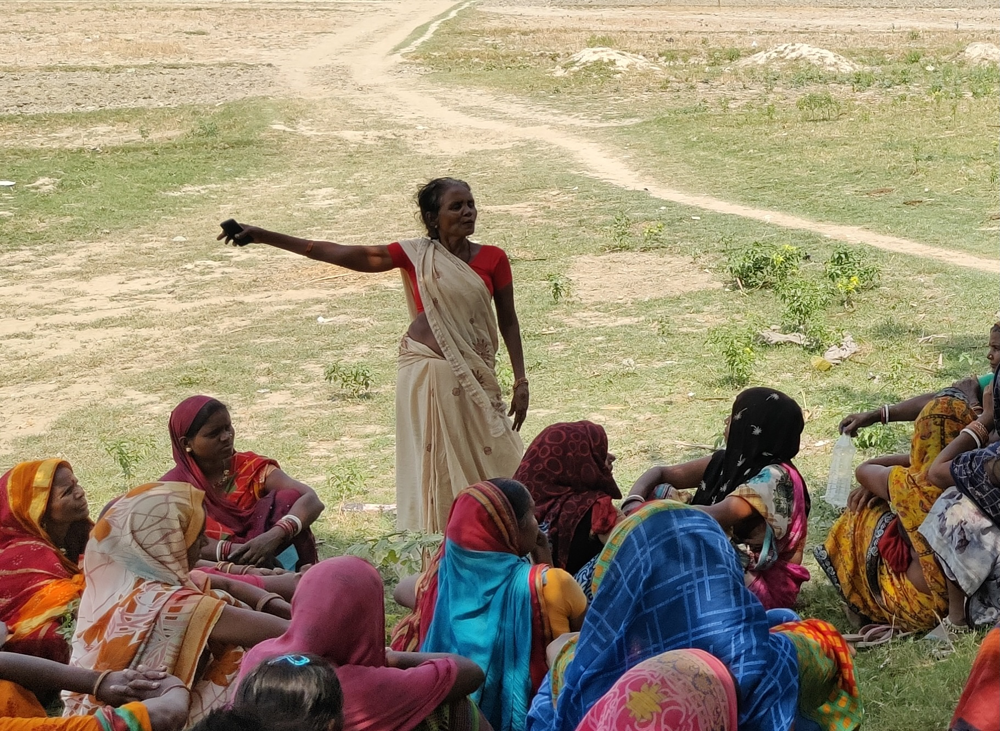
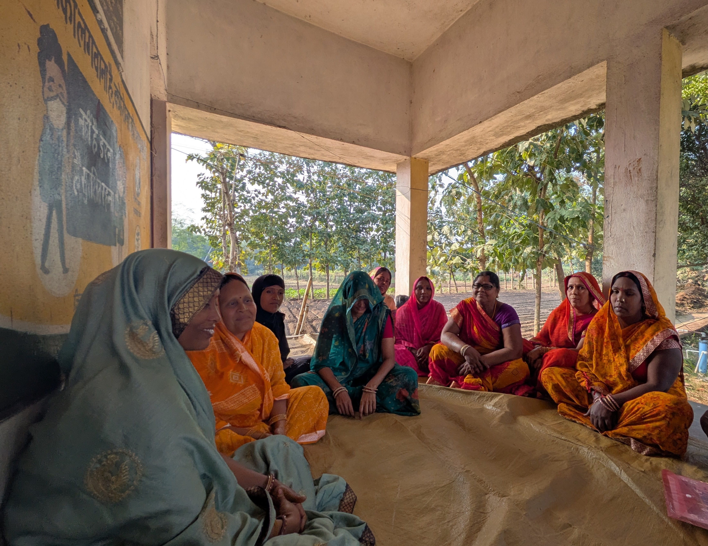
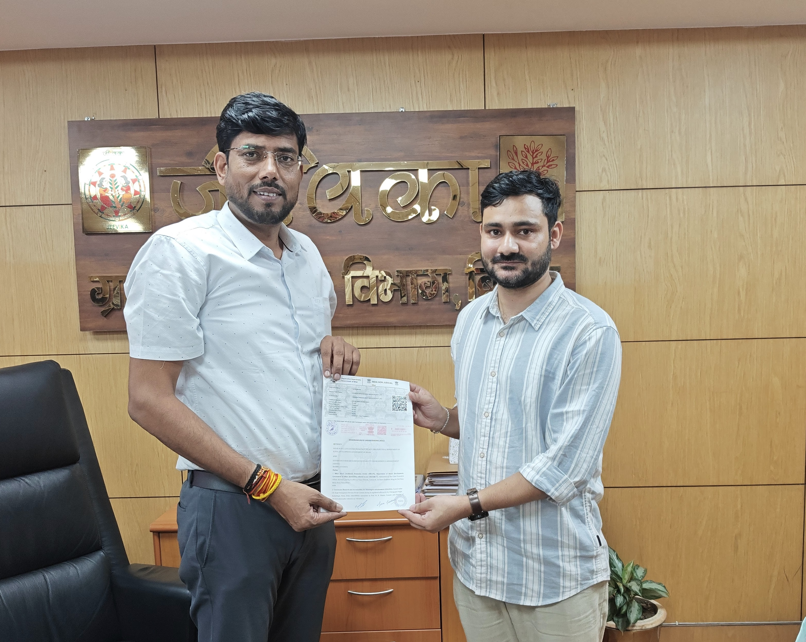
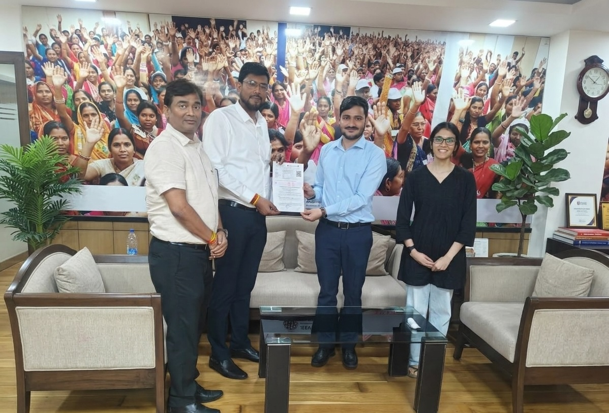

Research

GRAMA (Governance Research and Accountability for Meaningful Advancement) is a research and policy initiative working to strengthen the accountability of public institutions by centering the perspectives of those they are meant to serve: last-mile citizens, frontline workers who connect them to the state, and local elected officials who represent them.
Across India's governance landscape, decisions flow downward — through administrative hierarchies, programme guidelines, and data systems designed for upward reporting. The people at the receiving end of policy — rural citizens navigating public programmes, and local government officials tasked with delivering them — rarely shape the information, feedback, or evidence that drives reform.
GRAMA exists to change this. We believe that effective governance requires not just better data or better research, but a fundamental reorientation: building systems that listen to those at the bottom, and institutions that learn from what they hear.
We envision governance that is shaped by those closest to it — where research, data, and advocacy come together to ensure that the voices of those furthest from power are not just heard, but acted upon.
We conduct rigorous, field-grounded research on how local governance functions in practice. Our work studies management practices, decision-making, collective action, and the role of voice within rural institutions using both quantitative and qualitative methods. We examine how citizens engage with administrative systems, how information moves through institutions, and why similar policies produce different outcomes across contexts. Our aim is to generate evidence that helps governments and communities build more responsive and effective forms of local governance.
We partner with large public programmes to reshape the administrative systems, feedback processes, and organisational learning through which they perceive communities, identify problems, and direct attention. Our focus is on building systems that carry local knowledge and citizen experience into institutional decision-making, and that support frontline workers in implementation. Our current work in Bihar, with JEEViKA, Rural Development Department, Government of Bihar, is one example: we are collaborating with one of India’s largest rural livelihoods programmes to prototype beneficiary feedback mechanisms within programme data architecture and to design evidence-based peer learning systems for last-mile cadre.
JEEViKA, Bihar's flagship government programme for self-help groups and rural livelihoods, spans 1.4 crore households across the state. GRAMA is partnering with JEEViKA to strengthen its data systems and accountability frameworks as part of a long-term organisational transformation.
Through this collaboration, JEEViKA is evolving into a more data-driven and responsive institution. GRAMA's work focuses on building tools and feedback systems that capture real-time insights from the field, streamline information flows across levels, and enhance the use of data for decision-making.

SHG meeting in Bhojpur

MoU signing with JEEViKA, October 2025

MoU signing with JEEViKA, May 2026


GRAMA's work is supported by a grant of the Bill & Melinda Gates Foundation via an institutional partnership with the University of Maryland, College Park.
Interested in working together? Fill out some info and we will be in touch shortly.
Not now but opening soon